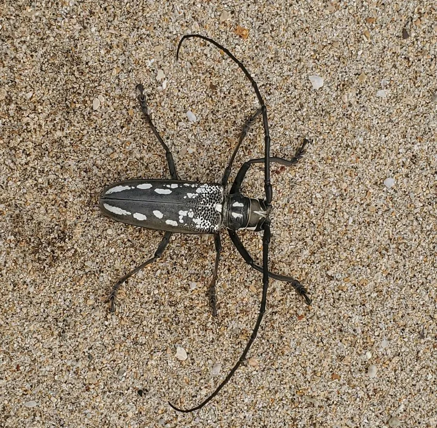

昆虫 · 动物界
云斑天牛 Batocera lineolata

鞘翅上有云状白斑的大型天牛，幼虫蛀食树干，危害杨树、柳树和桑树等多种阔叶树，是重要的蛀干害虫。
- 分类
- 门节肢动物门纲昆虫纲目鞘翅目科天牛科属云斑天牛属
- 栖息环境
- 杨树、柳树、桑树等阔叶林地与果园，幼虫在树干内
- 地理分布
- 中国大部分地区、日本和朝鲜半岛
- 保护级别
- 暂无评估；重要蛀干害虫
物种志
云斑天牛成虫体长约 3.5–5 cm，体黑褐色至灰褐色，鞘翅上有不规则的白色或淡黄色云状斑纹，前胸背板两侧有刺突，触角长，雄虫触角超过体长。幼虫体形肥厚，乳白色，头部黑褐色，蛀入树干内部取食。
它主要危害杨树、柳树、桑树、栎树和果树等阔叶树，幼虫在树干内蛀食木质部，形成粗大的蛀道，导致树势衰弱、枝干折断甚至整株枯死。成虫在夏季羽化，取食嫩枝树皮，夜间活动，有趋光性。云斑天牛分布于中国大部分地区、日本和朝鲜半岛，是杨树和桑树的重要害虫。防治以清除虫源木、树干涂白、人工捕捉成虫和释放天敌为主，严重时可在蛀孔内注入药剂处理。
形态与习性
- 食性幼虫蛀食树干木质部；成虫啃食嫩枝树皮
- 体长成虫约 3.5–5 cm
- 识别鞘翅上有云状白斑，前胸背板有刺突
- 危害蛀道导致树势衰弱、枝干折断甚至整株枯死
- 防治清除虫源木、树干涂白、人工捕捉和释放天敌
趣味知识
- 云斑天牛鞘翅上的白斑像云朵，因此得名。
- 它的幼虫在树干里蛀出粗大蛀道，对杨树危害很大。
- 夏季夜晚，云斑天牛常被灯光吸引，可以人工捕捉。